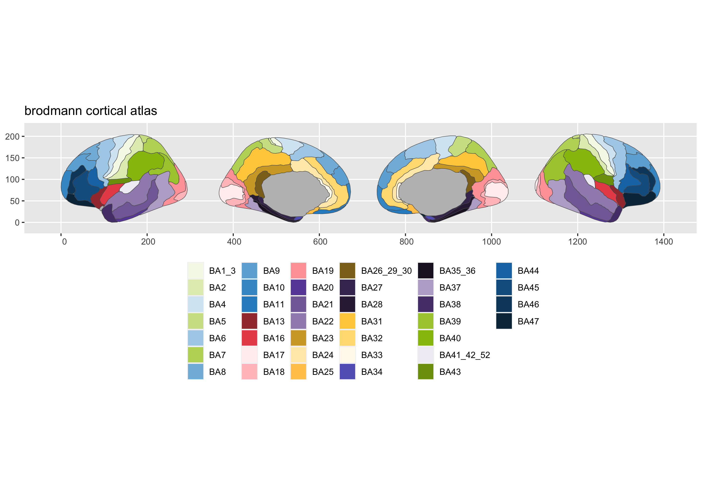
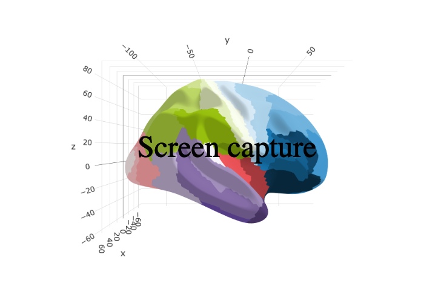

This package contains dataset for plotting the brodmann atlas ggseg and ggseg3d, based on the supplementary materials of Pijnenburg et al., NeuroImage, 239, 2021 DOI; Version 1; 15-01-2021.
To learn how to use these atlases, please look at the documentation for ggseg and ggseg3d
We recommend installing the ggseg-atlases through the ggseg r-universe:
# Enable this universe
options(repos = c(
ggseg = 'https://ggseg.r-universe.dev',
CRAN = 'https://cloud.r-project.org'))
# Install some packages
install.packages('ggsegBrodmann')You can install the released version of ggsegBrodmann from GitHub with:
# install.packages("remotes")
remotes::install_github("ggseg/ggsegBrodmann")
library(ggseg)
#> Warning: package 'ggseg' was built under R version 4.1.1
#> Loading required package: ggplot2
library(ggseg3d)
library(ggsegBrodmann)
plot(brodmann) +
theme(legend.position = "bottom",
legend.text = element_text(size = 9)) +
guides(fill = guide_legend(ncol = 6))
library(dplyr)
ggseg3d(atlas = brodmann_3d) %>%
add_glassbrain() %>%
pan_camera("right lateral")
Please note that the ‘ggsegBrodmann’ project is released with a Contributor Code of Conduct. By contributing to this project, you agree to abide by its terms.